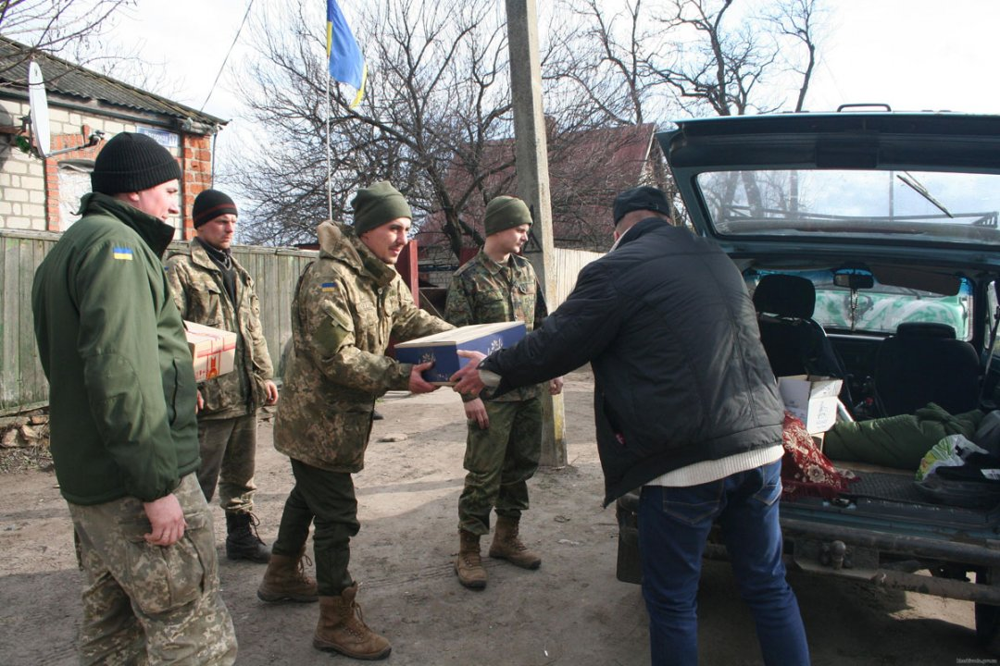

Одним із найбільш значущих результатів Революції Гідності стало виникнення волонтерського руху
Про волонтерський рух в Україні сьогодні з захопленням говорять у багатьох країнах світу, називаючи це явище унікальним. Розквіт волонтерської діяльності у нас припав на час Революції Гідності і початок війни на Донбасі. У надзвичайно складний період саме цей рух об’єднав суспільство, створив дієву структуру громадських організацій, груп людей, готових взяти на себе вирішення найбільш нагальних і болючих проблем держави.
Сьогоднішньому волонтерському руху в Україні мало аналогів не тільки в країнах колишнього СРСР, а й на Заході, звідки, власне, й прийшов термін «волонтерство». Слово «волонтер» походить від французського volontaire (доброволець), яке в свою чергу запозичено з латинського voluntarius (voluntas – вільне волевиявлення, volō –бажання, намір). Тобто волонтерство — добровільна безкорисна суспільно важлива діяльність.

Визначальним є принцип добровільності – волонтер діє за покликом душі, з почуття потреби реалізувати свою громадянську позицію.
Волонтерство як соціокультурне явище нерозривно пов’язане з розвитком цивілізації. В історії людства навряд чи знайдеться суспільство, якому не були б притаманні ідеї добровільної та безкорисливої допомоги. І завжди знаходились люди, для яких самореалізація, самоудосконалення були можливі лише через працю на благо інших. Слід сказати, що протягом віків релігія, церква спонукала людей до благодійництва і волонтерства, виховувала альтруїстичну свідомість.
В 2019 році людство буде відзначати 160-річчя виникнення волонтерського руху. Його початком прийнято вважати 1859-й, коли швейцарський підприємець і громадський діяч Жан Анрі Дюнан, вражений страшними наслідками однієї з найкривавіших битв австро-італо-французської війни (під Сольферіно на полі бою лишилися вмирати більше дев’яти тисяч скалічених солдат), фактично ініціював створення Міжнародного комітету Червоного Хреста – організації, що на добровільних засадах надавала би першу медичну допомогу пораненим. Пізніше Дюнан став першим лауреатом Нобелевської премії миру. Принципами, які він започаткував в цій організації, почали користуватись активні громадяни в багатьох країнах світу, і цей рух поступово охоплював різні види діяльності: допомога бідним, важкохворим, сиротам, навчання грамоті, боротьба з пияцтвом. В ХІХ столітті особливо розвивається благодійницька діяльність, яка ставить собі ту ж мету.
Однак я вважаю волонтерство і благодійництво дещо різними видами суспільної діяльності. Адже благодійництво не передбачає особистої безпосередньої участі у суспільно важливій роботі (не потрібно чергувати в притулку, розвозити нужденним харчі і ліки, готувати їжу). Благодійники, як правило, обмежуються фінансовою допомогою, а також нерідко розраховують на різні пільги з боку держави (що частенько і отримують).
У волонтерів інші погляди. Це в першу чергу – особиста безпосередня участь у вирішенні певної суспільно важливої проблеми. Також визначальним є принцип добровільності, адже волонтер діє за покликом душі, з почуття потреби реалізувати свою громадянську позицію (саме такі люди формують суспільну свідомість). Діяльність волонтерів безкорислива, неприбуткова. Вони не отримують ні зарплати, ні жодної матеріальної вигоди, все роблять безкоштовно. І єдина їх нагорода – визнання громади, що може трансформуватись в обрання на різні державні посади чи висування на нагородження медалями та орденами. І нарешті, волонтерська робота носить суспільно важливий характер, тобто спрямовується на вирішення проблеми, що турбує багатьох громадян і з певних причин не може повністю вирішитись зусиллями держави.
На українських землях волонтерство розвивалось ще з 19 століття, коли створювались різноманітні громадські організації, що опікувались лікарнями для малозабезпечених, притулками, безкоштовними їдальнями. Активно діяли організації Червоного Хреста, особливо під час російсько-турецької, російсько-японської та Першої світової війн. Волонтери також навчали грамоті (особливо на західноукраїнських землях), створювали підрозділи Товариства тверезості та опікувались будинками для безхатченків.Але з встановленням радянської влади цей рух фактично згортається і починає відновлюватись лише з кінця 80-х років минулого століття.
До речі, термін «волонтерство» для такого виду діяльності в світі почали використовувати лише з 70-х років ХХ століття, коли Міжнародна асоціація добровольчих зусиль кожних два роки почала проводити Всесвітні конференції волонтерів. На такій конференції в 1990 році у Парижі було прийнято Загальну декларацію волонтерів і визначено, що волонтерство – добровільна, активна, спільна чи особиста участь громадянина в житті людських співтовариств заради покращення якості життя, економічного та соціального розвитку. Декларація підтримує право на волонтерську діяльність для всіх чоловіків, жінок та дітей, незалежно від їхньої раси, віросповідання, фізичних особливостей, соціального та матеріального становища.
Саме завдяки волонтерам в 2014 році країна зберегла свій суверенітет.
З перших років незалежності в Україні волонтерство оживає і починає розвиватись. Початком цього процесу вважається 1992 рік, коли створюється служба «Телефон довіри», в якій працювали виключно волонтери. Згодом виникають організації, що реалізовують різні соціальні проекти допомоги важкохворим, багатодітним сім’ям, одиноким людям похилого віку, інвалідам. Активно розвивається напрям боротьби з розповсюдженням СНІДу та допомоги наркозалежним.
У перші роки незалежності ефективно працюють напрями волонтерства під егідою релігійних організацій, особливо протестантських церков. Наприклад, Українська Уніонна конференція церкви адвентистів сьомого дня ще у середині 1990-х років ініціювала створення Адвентистської медичної асоціації України (фундація продовжує діяти по сьогоднішній день, в її рядах понад 700 фахівців вищої і середньої кваліфікації, які надають медичну допомогу нужденним в різних регіонах країни). За сприяння Української лютеранської церкви понад 15 років функціонує “Медична клініка на колесах”. Громади Армії спасіння реалізують такі програми, як “Ліга милосердя” (започаткована для обслуговування самотніх хворих людей, прикутих до ліжка), “Відкриті двері” (передбачає різноманітну допомогу будинкам для осіб похилого віку), “Інтенсивна корекція” (спрямована на кореляцію інтелектуального розвитку неповнолітніх у притулках та дитячих будинках). За трьома проектами – “Домашня опіка”, “Допомога на колесах дітям вулиці”, “Консультативний центр для жінок, постраждалих від торгівлі людьми” – працюють структури “Карітас” Української греко-католицької церкви у Хмельницькій області. У багатьох населених пунктах Закарпатського регіону осередками Римсько-католицької церкви було засновано мережу безкоштовних аптек.
Проте в цілому до 2014 року волонтерський рух в Україні розвивався досить слабо, у порівнянні з іншими країнами світу. Згідно рейтингу World Giving Index в 2010 році Україна займала лише 150 місце (тільки 5 процентів населення було залучено до волонтерської роботи). Але Революція Гідності, анексія Криму та війна на Донбасі все змінили.
Без волонтерів не було б Майдану. Вірніше, він би зібрався, але навряд чи вистояв без надійного по-справжньому народного волонтерського тилу. Всі пам’ятають, як кияни показали всій країні приклад дивовижної самоорганізації заради досягнення головної мети – змінити Україну, зробити її правовою європейською державою. Кожну добу на Хрещатик добровільно, за покликом душі приїздили і приходили тисячі містян, готових надати безкоштовну допомогу мітингувальникам. Волонтери взяли на себе велику частину роботи з облаштування комфортного перебування людей на Майдані. Вони організовували польові кухні, встановлювали намети, надавали необхідну інформацію. Волонтерами ставали також і професіонали – медики, юристи, психологи – що прагнули якось фахово допомогти однодумцям. За лічені дні виникли десятки волонтерських ініціатив та інтернет-проектів: наприклад, «#єврохостел» (допомога по розміщенню протестувальників в квартирах киян), «Євромайдан.SOS», «Майдан.Медик»..
Можливо, найбільш значущим результатом Революції Гідності, крім усвідомлення українцями необхідності побудови національної держави, стало виникнення волонтерського руху – важливої складової громадянського суспільства і головної рушійної сили реформування країни.
Після анексії Криму і початку війни на Донбасі волонтерство піднялось на найвищий рівень розвитку за весь час незалежності України. У грудні 2014 року на замовлення Організації Об’єднаних Націй компанія GfK Ukraine провела загальнонаціональне дослідження стану волонтерства в Україні. Згідно висновків дослідження, українці визнають велику роль волонтерського руху в суспільних процесах: 62% визнають роль волонтерів у політичних змінах останнього року, 85% вважають, що волонтерський рух допомагає зміцненню миру, а 81% схильні вважати волонтерський рух обов’язковою складовою громадянського суспільства. Майже чверть українців (23%) мали досвід волонтерства, із них 9% почали займатись волонтерством протягом останнього року. Основним напрямом діяльності волонтерів у 2014 році стала допомога українській армії та пораненим – цим займались 70% волонтерів. До подій Майдана найбільш актуальними напрямами діяльності були допомога соціально незахищеним групам населення та благоустрій громадського простору.
Думаю, що років через двадцять школярі з величезним подивом будуть читати перелік речей, які гостро потребували українські солдати на передовій у 2014—2015 роках. Ось список, розміщений на одному з волонтерських сайтів в соцмережах влітку 2014-го: «Бронежилети, каски кевларові, розвантажувальні жилети, камуфляж, білизна, медикаменти, вітаміни, біноклі, тепловізори, берці, кросівки, футболки, шкарпетки…» І все це діставли, а потім везли на лінію фронту добровільні помічники армії.
Пам’ятаєте популярний анекдот того часу: "Якщо українцям сказати, що для перемоги необхідна ядерна боєголовка, то її через дві години не тільки зберуть, але і привезуть волонтери. З чаєм на додачу".
Приведу також цитату з інтерв’ю, яке дав журналістам одного з українських видань захисник донецького аеропорту Дмитро: "Наша група трималася в аеропорту на одних волонтерах. У сам аеропорт вони не могли прорватися, але привозили допомогу на український блокпост в Піски. Вони везли їжу, предмети гігієни, одяг і взуття, тепловізори, приціли та інше спорядження. Все це нам передавали від простих українців. Держава, крім автоматів і патронів, нічого не давала. Були ще бронежилети, але дуже погані, волонтери нам привезли нормальні – 4-го класу захисту. Ми знали, що про нас пам'ятають, відчували підтримку народу".
Не буде перебільшенням сказати, що саме завдяки волонтерам у 2014 році країна зберегла свій суверенітет, зупинила російську агресію на сході та відновила боєздатну армію з високим моральним духом.На початок